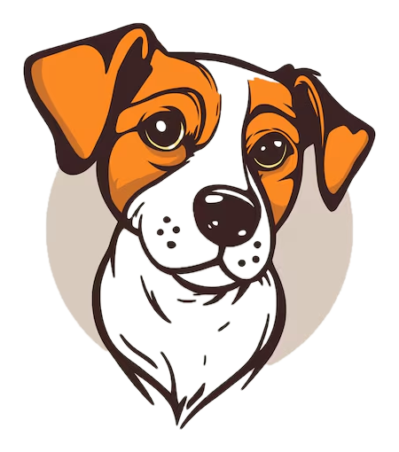
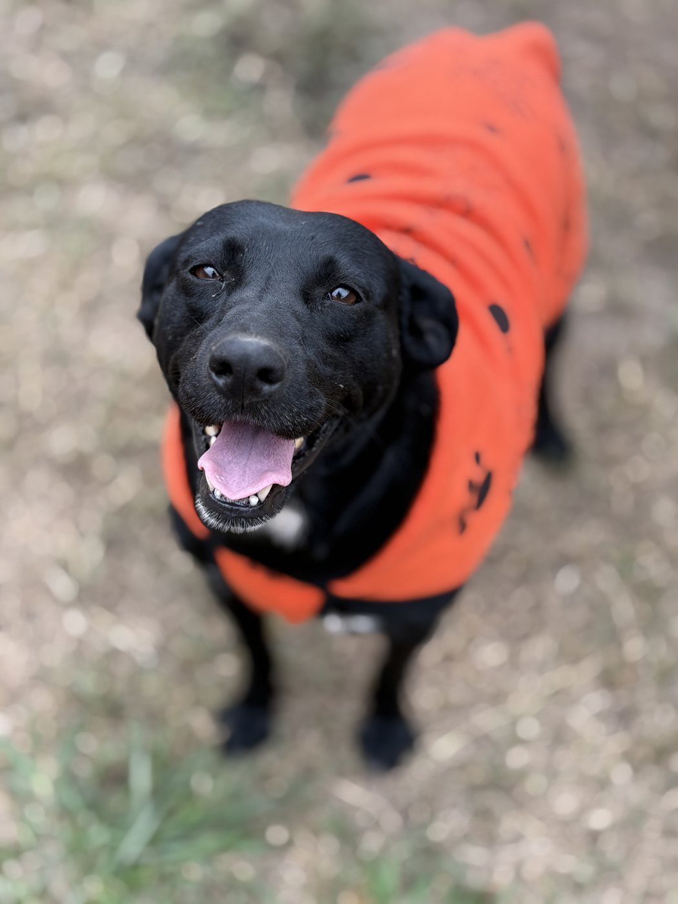
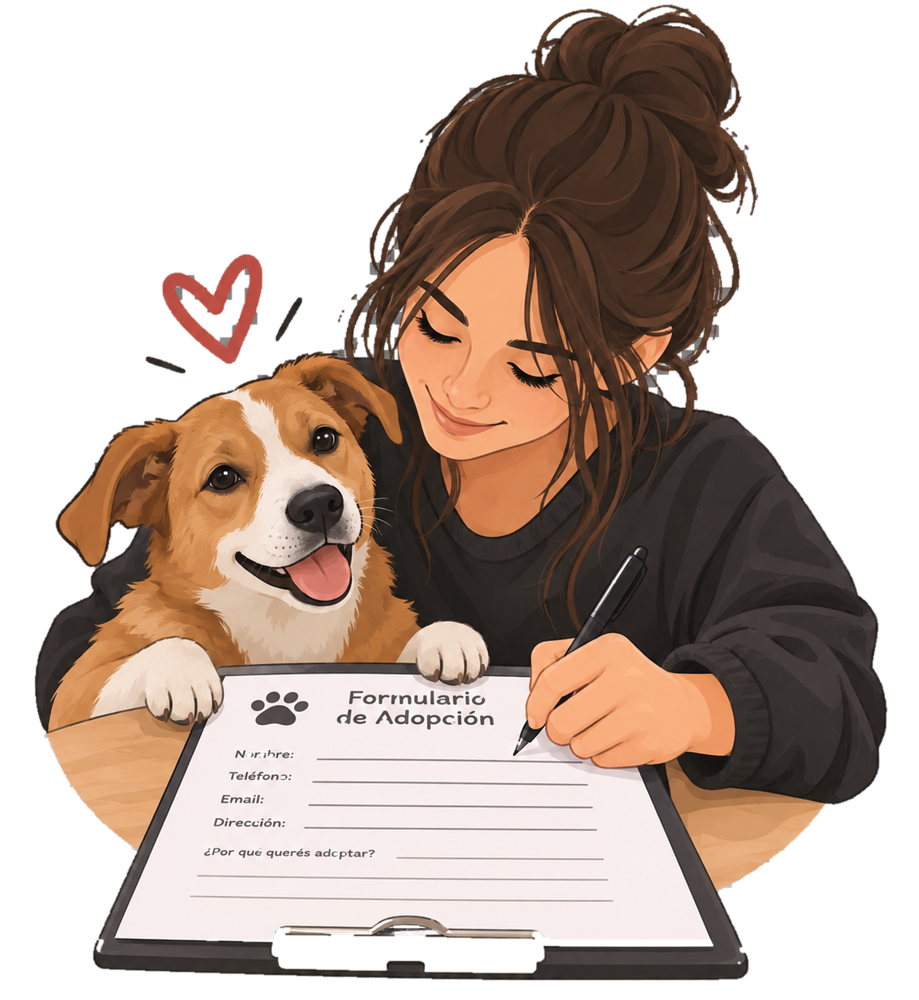
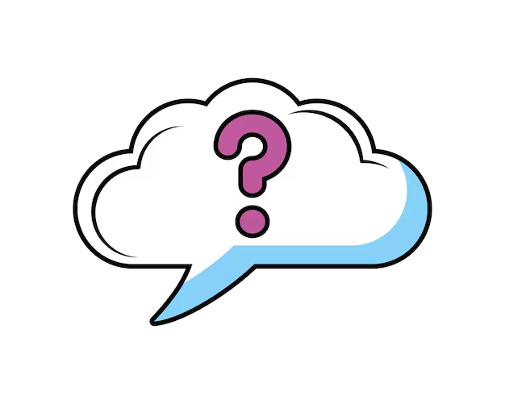
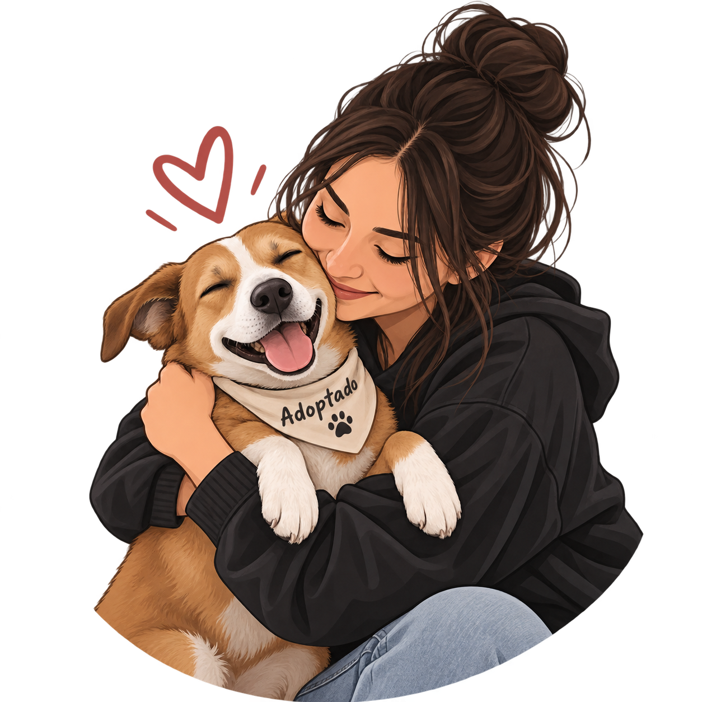
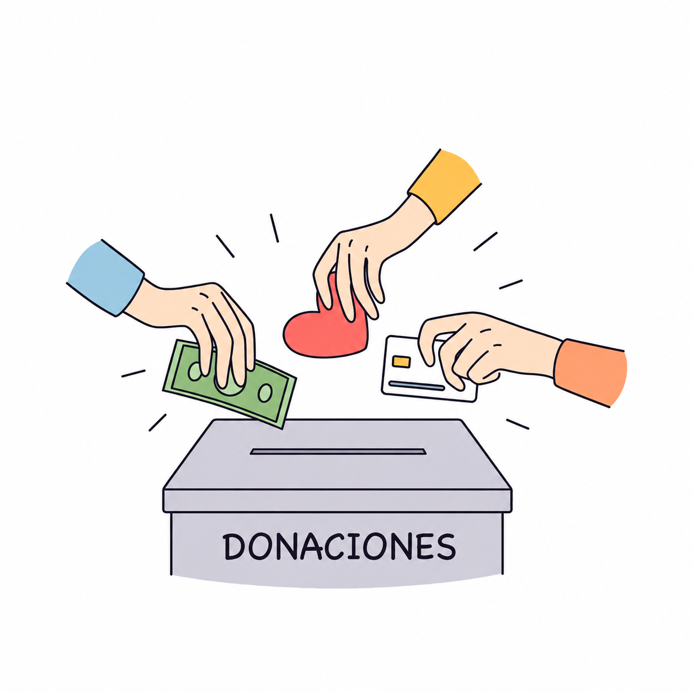
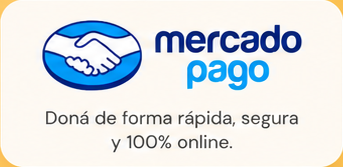
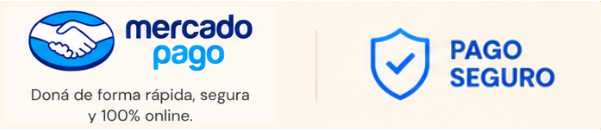

01PRIMER PASO
Conocé
Elegí un perro y conocé su historia, personalidad y necesidades.


Hay un peludito esperando una familia responsable. Conocé sus historias y ayudanos a seguir rescatando.

Deslizá, conocelos y elegí a quién querés darle una nueva oportunidad.
Un recorrido simple para que cada adopción sea responsable, acompañada y para toda la vida.
Elegí un perro y conocé su historia, personalidad y necesidades.

Completá el formulario de adopción con información sobre vos y tu hogar.

El equipo revisa la solicitud y se comunica con vos para avanzar.

Si todo está listo, empieza una nueva historia juntos.

Veterinaria, alimento, medicamentos y rescates necesitan de personas que quieran dar una mano.

Podés hacer un aporte único o ayudarnos todos los meses. Tu donación se transforma en alimento, medicamentos y atención veterinaria.


Todo lo que pasa día a día también lo compartimos en Instagram.
VISITANOS!